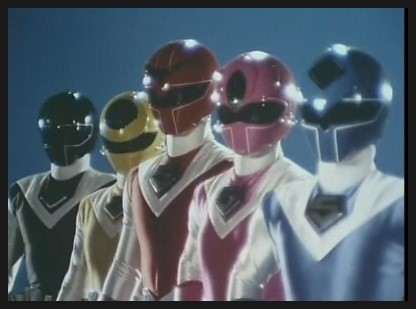

슈퍼전대 시리즈 제11번째 작품. 국내명은 대영팬더 더빙판에서는 '빛의 전사 마스크맨', 파워레인저 퍼팩트 대백과 및 캡틴포스와 젠카이저에서는 '파워레인저 마스크맨'. 한국에서는 대영팬더 전설의 3연작 중 하나로 불린다. 
지구 깊은 땅 속에는 이종족인 지저(지하)인들[6]이 살고 있었고, 지저인은 지제국이라는 지상인들과 별개로 고도로 발전된 문명을 이루어 지저제국 튜브라는 거대한 국가를 이루고 있었다. 그러던 중 튜브 내부에서 제왕 제바를 필두로 지상을 정복하려는 무리들이 정권을 잡게 되고, 그 첨병으로 이전 왕조의 왕녀였던 이아루 공주가 파견된다. 이아루 공주는 본래 지상 정복을 위해 '미오'라는 지상인으로 변장하여 정보수집을 하려고 했지만, 우연히 일본에서 카레이서로 활동하는 타케루라는 청년을 만나 그의 따뜻한 마음에 감동받아 사랑하는 관계까지 된다.